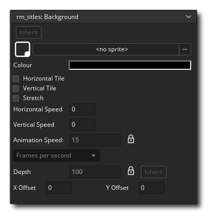
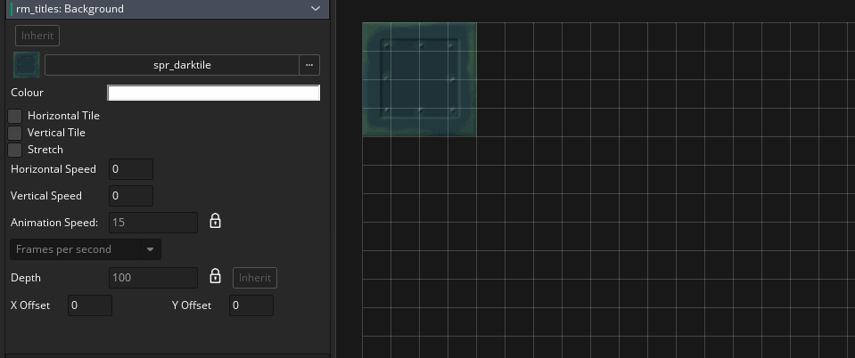
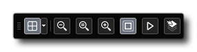
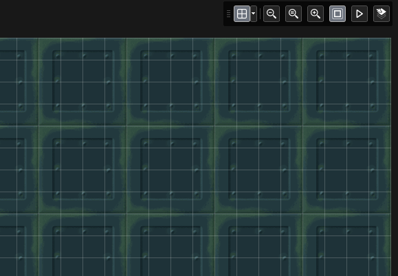

By default the room will have been created with a Background layer, so select that now. This layer will be used to show the background tile sprite that we added previously. This is done from the background Layer Properties window: 
The background layer is a layer that can be cleared to a single colour and/or have a single image applied to it. In this case we want to assign the dark tile sprite we added, so click on the section marked <no sprite> and select the sprite spr_darktile. You'll see that the image now appears in the top left corner of our room as a background, but that's not exactly what we want... we want it to tile across the screen. We could have created a tilemap layer for this and added the background as single tile, but with the background layer it's a lot simpler: just tick the Vertical tile and Horizontal Tile check-boxes:

Before continuing let's just look at a couple of the other options for backgrounds. You'll see that we have the option to Stretch the background image too. All this will do is stretch the background image used to fill the whole room area, which with a small image like the one we are using doesn't look right, which is why we tile it instead. You can also set the Horizontal Speed and Vertical Speed for the background layer. This will scroll the layer by the number of pixels given every game frame, so setting a horizontal speed of, for example, -2 will scroll the background from right to left at a rate of 2 pixels every game frame.
If you set this in the room editor you won't see anything happen, but in your game it will scroll. However sometimes you want to preview a change like this without having to compile the whole project to see how it looks, which is where the Animate feature of the room editor comes in very handy. In the main editor window, you have a bunch of tools in the top right corner: 
The one we are interested in here is the Play Animation button  . Clicking this will animate the whole room such that any backgrounds that are set to move, or tile sets that are set to animate, or any sprite assets that have sub-images will be shown as they would appear in the game:
. Clicking this will animate the whole room such that any backgrounds that are set to move, or tile sets that are set to animate, or any sprite assets that have sub-images will be shown as they would appear in the game:

With the horizontal background speed now set to -2, this will add interest to our title screen, we can continue on to make our title object.